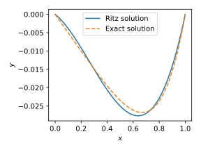
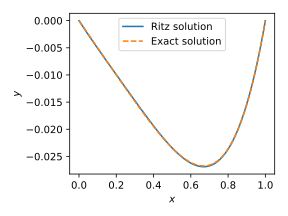

Numerical methods challenge: Day 23 - Ritz method
During October (2017) I will write a program per day for some well-known numerical methods in both Python and Julia. It is intended to be an exercise then don't expect the code to be good enough for real use. Also, I should mention that I have almost no experience with Julia, so it probably won't be idiomatic Julia but more Python-like Julia.
Ritz method
Today we have the Ritz method to solve the equation:
with
The method consist in forming a functional that is equivalent to the differential equation, propose an approximation as a linear combination of a set of basis functions and find the best set of coefficients for that combination. That best solution is found minimizing the functional.
The functional for this differential equation is
In this case, we are using the approximation
where we picked the factor \(x (1 - x)\) to enforce that the basis functions satisfy the boundary conditions. The approximated functional reads
where, in general, we will need to perform numerical integration for the second term.
Minimizing the functional
we obtain the system of equations
with
and
We will test the implementation with the function \(f(x) = x^3\), that leads to the solution
Following are the codes.
Python
from __future__ import division, print_function import numpy as np from scipy.integrate import quad from scipy.linalg import solve import matplotlib.pyplot as plt def ritz(N, source): stiff_mat = np.zeros((N, N)) rhs = np.zeros((N)) for row in range(N): for col in range(N): numer = (2 + 2*row + 2*col + 2*row*col) denom = (row + col + 1) * (row + col + 2) * (row + col + 3) stiff_mat[row, col] = numer/denom fun = lambda x: x**(row + 1)*(1 - x)*source(x) rhs[row], _ = quad(fun, 0, 1) return stiff_mat, rhs N = 2 source = lambda x: x**3 mat, rhs = ritz(N, source) c = solve(mat, -rhs) x = np.linspace(0, 1, 100) y = np.zeros_like(x) for cont in range(N): y += c[cont]*x**(cont + 1)*(1 - x) #%% Plotting plt.figure(figsize=(4, 3)) plt.plot(x, y) plt.plot(x, x*(x**4 - 1)/20, linestyle="dashed") plt.xlabel(r"$x$") plt.ylabel(r"$y$") plt.legend(["Ritz solution", "Exact solution"]) plt.tight_layout() plt.show()
Julia
using PyPlot function ritz(N, source) stiff_mat = zeros(N, N) rhs = zeros(N) for row in 0:N-1 for col in 0:N-1 numer = (2 + 2*row + 2*col + 2*row*col) denom = (row + col + 1) * (row + col + 2) * (row + col + 3) stiff_mat[row + 1, col + 1] = numer/denom end fun(x) = x^(row + 1)*(1 - x)*source(x) rhs[row + 1], _ = quadgk(fun, 0, 1) end return stiff_mat, rhs end N = 2 source(x) = x^3 mat, rhs = ritz(N, source) c = -mat\rhs x = linspace(0, 1, 100) y = zeros(x) for cont in 0:N - 1 y += c[cont + 1]*x.^(cont + 1).*(1 - x) end #%% Plotting figure(figsize=(4, 3)) plot(x, y) plot(x, x.*(x.^4 - 1)/20, linestyle="dashed") xlabel(L"$x$") ylabel(L"$y$") legend(["Ritz solution", "Exact solution"]) tight_layout() show()
Both have (almost) the same result, as follows

And if we consider 3 terms in the expansion, we get

Comparison Python/Julia
Regarding number of lines we have: 38 in Python and 38 in Julia. The comparison
in execution time is done with %timeit magic command in IPython and
@benchmark in Julia.
For Python:
with result
For Julia:
with result
BenchmarkTools.Trial: memory estimate: 6.56 KiB allocs estimate: 340 -------------- minimum time: 13.527 μs (0.00% GC) median time: 15.927 μs (0.00% GC) mean time: 17.133 μs (4.50% GC) maximum time: 2.807 ms (97.36% GC) -------------- samples: 10000 evals/sample: 1
In this case, we can say that the Python code is roughly 14 times slower than Julia.
Comments
Comments powered by Disqus